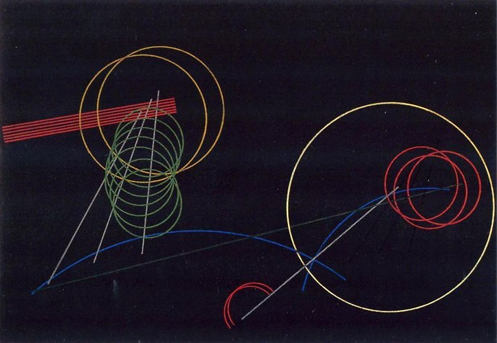

Aleksandr Rodchenko, Linearism 1920
To work a concept means varying its extension and understanding, generalizing it by incorporating exceptional features, exporting it outside its region of origin, taking it as a model or conversely seeking a model for it, in short, gradually giving it, through regulated transformations, the function of a form
—Georges Canguilhem
Such is precisely the being that the cogito makes emerge, at least if the order of reasons is taken seriously. In fact, at the very moment at which the cogito is declared to be certain, it is disjoined, by hypothesis, from any quality -- qualities being, from then on, collectively and individually subject to doubt. The very thought by which the cogito is defined is strictly nondescript; it is the minimum common to any possible thought, since any thought, whatever it may be (true or false, empirical or not, reasonable or absurd, affirmed, or denied, or put into doubt), can give me the opportunity to conclude that I am. A correlate without qualities assumed by a thought without qualities: we can see how this being -- called the subject by Lacan, but not by Descartes -- corresponds to what modern science does.
—Jean-Claude Milner
The position of art is a refutation of the position of discourse. The position of art indicates a function of the figure, which is not signified-a function around and even in the figure. This position indicates that the symbol's transcendence is the figure, that is, a spatial manifestation that linguistic space cannot incorporate without being shaken, an exteriority it cannot interiorize as signification. Art stands in alterity as plasticity and desire, a curved expanse against invariability and reason, diacritical space. Art covets the figure, and beauty is figural, unbound, rhythmic. The true symbol gives rise to thought, but not before lending itself to sight. And the surprising thing is not so much that it gives rise to thought, since once language exists, every object has to be signified and inserted in a discourse, falling into the sieve where thought sifts and sorts everything. The mystery is that the symbol remains to be seen, that it remains steadfasdy within the sensory, that there remains a world that is a store of sights, or an interworld that is a store of visions, and that every form of discourse exhausts itself before exhausting it. The absolutely-other would be this beauty, or the difference.
—Jean-Francois Lyotard
Synthesis is not the engine, the engine is invention (analysis).
—Aleksandr Rodchenko